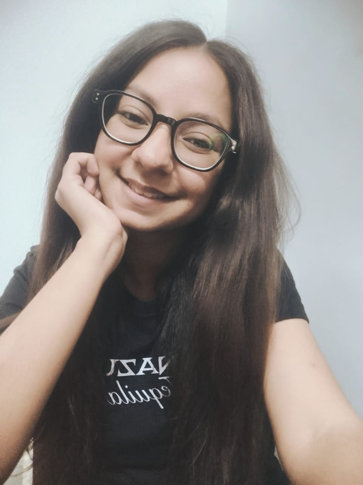

Building practical software solutions through code, creativity and continuous learning. Passionate about Web Development, Python, Database Systems and Software Engineering.

I am pursuing B.E. in Computer Engineering from LDRP-ITR (KSV University). My interests lie in Web Development, Python Development, Database Systems, Computer Networks and Software Engineering. I enjoy transforming ideas into user-friendly digital experiences while continuously improving my technical and problem-solving skills.
```Agriculture-based platform designed to connect farmers and buyers while providing market insights, weather updates and direct selling opportunities.
Software Engineering project focused on intelligent task scheduling, productivity tracking and efficient time management.
LDRP-ITR (KSV University)
Email: meerasachchade14@gmail.com
GitHub: github.com/meerasachchade14-spec
LinkedIn: Meera Sachchade
```